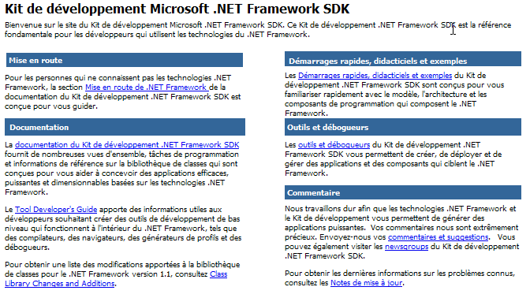
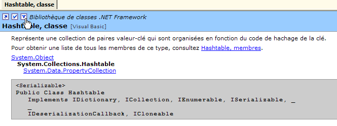
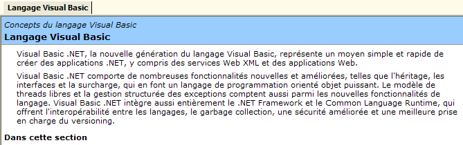
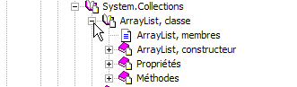
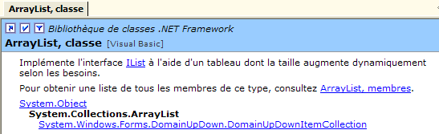
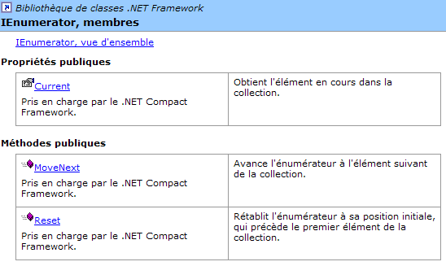

4. Commonly Used .NET Classes
Here we present a few classes from the .NET platform that are of interest, even for a beginner. First, we show how to obtain information about the hundreds of available classes.
4.1. Seeking help with SDK.NET
4.1.1. wincv
If you have installed only the SDK and not Visual Studio.NET, you can use the wincv.exe program, which is typically located in the SDK directory, for example C:\Program Files\Microsoft Visual Studio .NET 2003\SDK\v1.1. When you launch this utility, you see the following interface:
 |
Type the name of the desired class in (1). This returns various possible options in (2). Select the appropriate one, and the result appears in (3)—in this case, the HashTable class. This method is suitable if you know the name of the class you are looking for. If you want to explore the list of options offered by the .NET platform, you can use the HTML file StartHere.htm, which is also located directly in the SSK.Net installation folder, for example C:\Program Files\Microsoft Visual Studio .NET 2003\SDK\v1.

The .NET Framework SDK Documentation link is the one to follow to get an overview of .NET classes:

From there, click the [Class Library] link. It contains a list of all .NET classes:

For example, let’s follow the System.Collections link. This namespace contains various classes that implement collections, including the HashTable class:

Let’s follow the HashTable link below:

We arrive at the following page:

Note the position of the hand below. It is pointing to a link that allows you to specify the desired language, in this case Visual Basic.
Here you’ll find the class prototype as well as usage examples. Click the [Hashtable, Members] link below:

We get the complete description of the class:

This method is the best way to explore the SDK and its classes. The WinCV tool is useful when you already know a little about the class but have forgotten some of its members. WinCV then allows you to quickly find the class and its members.
4.2. Searching for help on classes with VS.NET
Here are some tips for finding help with Visual Studio.NET
4.2.1. Help Option
Select the [?] option from the menu.

The following window appears:

In the drop-down list, you can select a help filter. Here, we’ll choose the [Visual Basic] filter.

Two types of help are useful:
- help on the VB.NET language itself (syntax)
- help on the .NET classes that can be used by the VB.NET language
The VB.NET language help is accessible via [Visual Studio.NET/Visual Basic and Visual C#/Reference/Visual Basic]:

This brings up the following help page:

From there, the various subheadings provide help on different VB.NET topics. Pay special attention to the VB.NET tutorials:

To access the various classes of the .NET platform, select the [Visual Studio.NET/.NET Framework] help.

We’ll focus in particular on the [Reference/Class Library] section:

Suppose we are interested in the [ArrayList] class. It is located in the [System.Collections] namespace. It is important to know this; otherwise, we would prefer the search method described below. We get the following help:

The [ArrayList, Class] link provides an overview of the class:

This type of page exists for all classes. It provides a summary of the class with examples. For a description of the class members, follow the [ArrayList, members] link:

4.2.2. Help/Index

The [Help/Index] option allows you to search for more targeted help than the previous method. Simply type in the keyword you are looking for:

The advantage of this method over the previous one is that you don’t need to know where to find what you’re looking for in the help system. This is likely the preferred method for targeted searches, while the other method is better suited for exploring everything the help system has to offer.
4.3. The String Class
The String class has many properties and methods. Here are a few of them:
number of characters in the string | |
default indexed property. [String].Chars(i) is the i-th character of the string | |
Returns true if the string ends with value | |
Returns true if the string starts with value | |
returns true if the string is equal to value | |
returns the first position in the string where the string value is found—the search starts from character 0 | |
Returns the position of the first occurrence of the string value in the string—the search starts at character index startIndex | |
class method - returns a string resulting from concatenating the values in the value array with the separator separator | |
returns a copy of the current string where the character oldChar has been replaced by the character newChar | |
The string is treated as a sequence of fields separated by the characters in the separator array. The result is an array of these fields | |
A substring of the current string starting at position startIndex and containing length characters | |
converts the current string to lowercase | |
converts the current string to uppercase | |
removes leading and trailing spaces from the current string |
A C string can be considered an array of characters. Thus
- C.Chars(i) is the i-th character of C
- C.Length is the number of characters in C
Consider the following example:
' options
Option Strict On
Option Explicit On
' namespaces
Imports System
Module test
Sub Main()
Dim uneChaine As String = "l'oiseau vole au-dessus des nuages"
affiche("uneChaine=" + uneChaine)
affiche("uneChaine.Length=" & uneChaine.Length)
affiche("chaine[10]=" + uneChaine.Chars(10))
affiche("uneChaine.IndexOf(""vole"")=" & uneChaine.IndexOf("vole"))
affiche("uneChaine.IndexOf(""x"")=" & uneChaine.IndexOf("x"))
affiche("uneChaine.LastIndexOf('a')=" & uneChaine.LastIndexOf("a"c))
affiche("uneChaine.LastIndexOf('x')=" & uneChaine.LastIndexOf("x"c))
affiche("uneChaine.Substring(4,7)=" + uneChaine.Substring(4, 7))
affiche("uneChaine.ToUpper()=" + uneChaine.ToUpper())
affiche("uneChaine.ToLower()=" + uneChaine.ToLower())
affiche("uneChaine.Replace('a','A')=" + uneChaine.Replace("a"c, "A"c))
Dim champs As String() = uneChaine.Split(Nothing)
Dim i As Integer
For i = 0 To champs.Length - 1
affiche("champs[" & i & "]=[" & champs(i) & "]")
Next i
affiche("Join("":"",champs)=" + System.String.Join(":", champs))
affiche("("" abc "").Trim()=[" + " abc ".Trim() + "]")
End Sub
' poster
Sub affiche(ByVal msg As [String])
' poster msg
Console.Out.WriteLine(msg)
End Sub
End Module
Execution yields the following results:
dos>vbc string1.vb
dos>string1
uneChaine=l'bird flies above the clouds
uneChaine.Length=34
chaine[10]=o
uneChaine.IndexOf("vole")=9
uneChaine.IndexOf("x")=-1
uneChaine.LastIndexOf('a')=30
uneChaine.LastIndexOf('x')=-1
uneChaine.Substring(4,7)=seau vo
uneChaine.ToUpper()=L'OISEAU VOLE ABOVE DES NUAGES
uneChaine.ToLower()=l'bird flies above the clouds
uneChaine.Replace('a','A')=l'oiseAu flies Over the nuAges
champs[0]=[l'bird]
champs[1]=[vole]
champs[2]=[au-dessus]
champs[3]=[des]
champs[4]=[nuages]
Join(":",champs)=l'bird:flies:above:clouds
(" abc ").Trim()=[abc]
Let's consider a new example:
' options
Option Strict On
Option Explicit On
' namespaces
Imports System
Module string2
Sub Main()
' the line to be analyzed
Dim ligne As String = "un:deux::trois:"
' field separators
Dim séparateurs() As Char = {":"c}
' split
Dim champs As String() = ligne.Split(séparateurs)
Dim i As Integer
For i = 0 To champs.Length - 1
Console.Out.WriteLine(("Champs[" & i & "]=" & champs(i)))
Next i
' join
Console.Out.WriteLine(("join=[" + System.String.Join(":", champs) + "]"))
End Sub
End Module
and the execution results:
The Split method of the String class allows you to place the fields of a string into an array. The definition of the method used here is as follows:
array of characters. These characters represent the characters used to separate the fields in the string. Thus, if the string is [field1, field2, field3], we can use separator=new char() {","c}. If the separator is a sequence of spaces, we use separator=nothing. | |
array of strings where each element is a field of the string. |
The Join method is a static method of the String class:
array of strings | |
a string that will serve as the field separator | |
a string formed by concatenating the elements of the value array, separated by the separator string. |
4.4. The Array Class
The Array class implements an array. In our example, we will use the following properties and methods:
property - number of elements in the array | |
Class method - returns the position of value in the sorted array - searches starting from position index and with length elements | |
Class method - copies the first length elements of sourceArray into destinationArray - destinationArray is created specifically for this purpose | |
Class method - sorts the array - the array must contain a data type with a default sorting function (strings, numbers). |
The following program illustrates the use of the Array class:
' options
Option Strict On
Option Explicit On
' namespaces
Imports System
Module test
Sub Main()
' read table elements typed on keyboard
Dim terminé As [Boolean] = False
Dim i As Integer = 0
Dim éléments1 As Double() = Nothing
Dim éléments2 As Double() = Nothing
Dim élément As Double = 0
Dim réponse As String = Nothing
Dim erreur As [Boolean] = False
While Not terminé
' question
Console.Out.Write(("Elément (réel) " & i & " du tableau (rien pour terminer) : "))
' reading the answer
réponse = Console.ReadLine().Trim()
' end of input if string empty
If réponse.Equals("") Then
Exit While
End If
' input verification
Try
élément = [Double].Parse(réponse)
erreur = False
Catch
Console.Error.WriteLine("Saisie incorrecte, recommencez")
erreur = True
End Try
' if no error
If Not erreur Then
' new table to accommodate the new element
éléments2 = New Double(i) {}
' copy old panel to new panel
If i <> 0 Then
Array.Copy(éléments1, éléments2, i)
End If
' new table becomes old table
éléments1 = éléments2
' no need for the new panel
éléments2 = Nothing
' insert new element
éléments1(i) = élément
' one more element in the picture
i += 1
End If
End While
' unsorted table display
System.Console.Out.WriteLine("Tableau non trié")
For i = 0 To éléments1.Length - 1
Console.Out.WriteLine(("éléments[" & i & "]=" & éléments1(i)))
Next i
' table sorting
System.Array.Sort(éléments1)
' sorted table display
System.Console.Out.WriteLine("Tableau trié")
For i = 0 To éléments1.Length - 1
Console.Out.WriteLine(("éléments[" & i & "]=" & éléments1(i)))
Next i
' Search
While Not terminé
' question
Console.Out.Write("Elément cherché (rien pour arrêter) : ")
' reading-checking response
réponse = Console.ReadLine().Trim()
' finished?
If réponse.Equals("") Then
Exit While
End If
' check
Try
élément = [Double].Parse(réponse)
erreur = False
Catch
Console.Error.WriteLine("Saisie incorrecte, recommencez")
erreur = True
End Try
' if no error
If Not erreur Then
' search for the element in the sorted array
i = System.Array.BinarySearch(éléments1, 0, éléments1.Length, élément)
' Display response
If i >= 0 Then
Console.Out.WriteLine(("Trouvé en position " & i))
Else
Console.Out.WriteLine("Pas dans le tableau")
End If
End If
End While
End Sub
End Module
The screen output is as follows:
Elément (réel) 0 du tableau (rien pour terminer) : 10,4
Elément (réel) 1 du tableau (rien pour terminer) : 5,2
Elément (réel) 2 du tableau (rien pour terminer) : 8,7
Elément (réel) 3 du tableau (rien pour terminer) : 3,6
Elément (réel) 4 du tableau (rien pour terminer) :
Tableau non trié
éléments[0]=10,4
éléments[1]=5,2
éléments[2]=8,7
éléments[3]=3,6
Tableau trié
éléments[0]=3,6
éléments[1]=5,2
éléments[2]=8,7
éléments[3]=10,4
Elément cherché (rien pour arrêter) : 8,7
Trouvé en position 2
Elément cherché (rien pour arrêter) : 11
Pas dans le tableau
Elément cherché (rien pour arrêter) : a
Saisie incorrecte, recommencez
Elément cherché (rien pour arrêter) :
The first part of the program constructs an array from numerical data entered via the keyboard. The array cannot be predefined since we do not know how many elements the user will enter. We therefore work with two arrays, elements1 and elements2.
' nouveau tableau pour accueillir le nouvel élément
éléments2 = New Double(i) {}
' copie ancien tableau vers nouveau tableau
If i <> 0 Then
Array.Copy(éléments1, éléments2, i)
End If
' nouveau tableau devient ancien tableau
éléments1 = éléments2
' plus besoin du nouveau tableau
éléments2 = Nothing
' insertion nouvel élément
éléments1(i) = élément
' un élémt de plus dans le tableau
i += 1
The elements1 array contains the currently entered values. When the user adds a new value, we create an elements2 array with one more element than elements1, copy the contents of elements1 into elements2 (Array.Copy), set elements1 to point to elements2, and finally add the new element to elements1. This is a complex process that can be simplified by using a variable-size array (ArrayList) instead of a fixed-size array (Array).
The array is sorted using the Array.Sort method. This method can be called with various parameters specifying the sorting rules. Without parameters, ascending sort is performed by default. Finally, the Array.BinarySearch method allows you to search for an element in a sorted array.
4.5. The ArrayList Class
The ArrayList class allows you to implement variable-size arrays during program execution, which the previous Array class does not allow. Here are some of the common properties and methods:
creates an empty list | |
number of elements in the collection | |
Adds the value object to the end of the collection | |
clears the list | |
index of the value object in the list or -1 if it does not exist | |
Same as above, but starting from element startIndex | |
Same as above, but returns the index of the last occurrence of value in the list | |
Same as above, but starting from the element at startIndex | |
Removes the object obj if it exists in the list | |
removes the element at index from the list | |
Returns the position of the value object in the list, or -1 if it is not found. The list must be sorted | |
Sorts the list. The list must contain objects with a predefined ordering relationship (strings, numbers) | |
sorts the list according to the ordering established by the comparer function |
Let’s revisit the example using Array objects and apply it to ArrayList objects:
' options
Option Strict On
Option Explicit On
' namespaces
Imports System
Imports System.Collections
Module test
Sub Main()
' read table elements typed on keyboard
Dim terminé As [Boolean] = False
Dim i As Integer = 0
Dim éléments As New ArrayList
Dim élément As Double = 0
Dim réponse As String = Nothing
Dim erreur As [Boolean] = False
While Not terminé
' question
Console.Out.Write(("Elément (réel) " & i & " du tableau (rien pour terminer) : "))
' reading the answer
réponse = Console.ReadLine().Trim()
' end of input if string empty
If réponse.Equals("") Then
Exit While
End If
' input verification
Try
élément = Double.Parse(réponse)
erreur = False
Catch
Console.Error.WriteLine("Saisie incorrecte, recommencez")
erreur = True
End Try
' if no error
If Not erreur Then
' one more element in the picture
éléments.Add(élément)
End If
End While
' unsorted table display
System.Console.Out.WriteLine("Tableau non trié")
For i = 0 To éléments.Count - 1
Console.Out.WriteLine(("éléments[" & i & "]=" & éléments(i).ToString))
Next i ' table sorting
éléments.Sort()
' sorted table display
System.Console.Out.WriteLine("Tableau trié")
For i = 0 To éléments.Count - 1
Console.Out.WriteLine(("éléments[" & i & "]=" & éléments(i).ToString))
Next i
' Search
While Not terminé
' question
Console.Out.Write("Elément cherché (rien pour arrêter) : ")
' reading-checking response
réponse = Console.ReadLine().Trim()
' finished?
If réponse.Equals("") Then
Exit While
End If
' check
Try
élément = [Double].Parse(réponse)
erreur = False
Catch
Console.Error.WriteLine("Saisie incorrecte, recommencez")
erreur = True
End Try
' if no error
If Not erreur Then
' search for the element in the sorted array
i = éléments.BinarySearch(élément)
' Display response
If i >= 0 Then
Console.Out.WriteLine(("Trouvé en position " & i))
Else
Console.Out.WriteLine("Pas dans le tableau")
End If
End If
End While
End Sub
End Module
The execution results are as follows:
Elément (réel) 0 du tableau (rien pour terminer) : 10,4
Elément (réel) 0 du tableau (rien pour terminer) : 5,2
Elément (réel) 0 du tableau (rien pour terminer) : a
Saisie incorrecte, recommencez
Elément (réel) 0 du tableau (rien pour terminer) : 3,7
Elément (réel) 0 du tableau (rien pour terminer) : 15
Elément (réel) 0 du tableau (rien pour terminer) :
Tableau non trié
éléments[0]=10,4
éléments[1]=5,2
éléments[2]=3,7
éléments[3]=15
Tableau trié
éléments[0]=3,7
éléments[1]=5,2
éléments[2]=10,4
éléments[3]=15
Elément cherché (rien pour arrêter) : a
Saisie incorrecte, recommencez
Elément cherché (rien pour arrêter) : 15
Trouvé en position 3
Elément cherché (rien pour arrêter) : 1
Pas dans le tableau
Elément cherché (rien pour arrêter) :
4.6. The Hashtable class
The Hashtable class allows you to implement a dictionary. A dictionary can be viewed as a two-column array:
 |
Keys are unique; that is, no two keys can be identical. The main methods and properties of the Hashtable class are as follows:
creates an empty dictionary | |
adds an entry (key, value) to the dictionary, where key and value are object references. | |
removes the entry with key=key from the dictionary | |
clears the dictionary | |
Returns true if the key key is in the dictionary. | |
Returns true if the value value is in the dictionary. | |
property: number of elements in the dictionary (key, value) | |
property: collection of dictionary keys | |
property: collection of dictionary values | |
indexed property: allows you to retrieve or set the value associated with a key |
Consider the following example program:
' options
Option Strict On
Option Explicit On
' namespaces
Imports System
Imports System.Collections
Module test
Sub Main()
Dim liste() As [String] = {"jean:20", "paul:18", "mélanie:10", "violette:15"}
Dim i As Integer
Dim champs As [String]() = Nothing
Dim séparateurs() As Char = {":"c}
' filling the dictionary
Dim dico As New Hashtable
For i = 0 To liste.Length - 1
champs = liste(i).Split(séparateurs)
dico.Add(champs(0), champs(1))
Next i
' number of elements in the dictionary
Console.Out.WriteLine(("Le dictionnaire a " & dico.Count & " éléments"))
' kEY LIST
Console.Out.WriteLine("[Liste des clés]")
Dim clés As IEnumerator = dico.Keys.GetEnumerator()
While clés.MoveNext()
Console.Out.WriteLine(clés.Current)
End While
' list of values
Console.Out.WriteLine("[Liste des valeurs]")
Dim valeurs As IEnumerator = dico.Values.GetEnumerator()
While valeurs.MoveNext()
Console.Out.WriteLine(valeurs.Current)
End While
' list of keys & values
Console.Out.WriteLine("[Liste des clés & valeurs]")
clés.Reset()
While clés.MoveNext()
Console.Out.WriteLine(("clé=" & clés.Current.ToString & " valeur=" & dico(clés.Current).ToString))
End While
' delete the "paul" key
Console.Out.WriteLine("[Suppression d'une clé]")
dico.Remove("paul")
' list of keys & values
Console.Out.WriteLine("[Liste des clés & valeurs]")
clés = dico.Keys.GetEnumerator()
While clés.MoveNext()
Console.Out.WriteLine(("clé=" & clés.Current.ToString & " valeur=" & dico(clés.Current).ToString))
End While
' dictionary search
Dim nomCherché As [String] = Nothing
Console.Out.Write("Nom recherché (rien pour arrêter) : ")
nomCherché = Console.ReadLine().Trim()
Dim value As [Object] = Nothing
While Not nomCherché.Equals("")
If dico.ContainsKey(nomCherché) Then
value = dico(nomCherché)
Console.Out.WriteLine((nomCherché + "," + CType(value, [String])))
Else
Console.Out.WriteLine(("Nom " + nomCherché + " inconnu"))
End If
' next search
Console.Out.Write("Nom recherché (rien pour arrêter) : ")
nomCherché = Console.ReadLine().Trim()
End While
End Sub
End Module
The execution results are as follows:
Le dictionnaire a 4 éléments
[Liste des clés]
mélanie
paul
violette
jean
[Liste des valeurs]
10
18
15
20
[Liste des clés & valeurs]
clé=mélanie valeur=10
clé=paul valeur=18
clé=violette valeur=15
clé=jean valeur=20
[Suppression d'une clé]
[Liste des clés & valeurs]
clé=mélanie valeur=10
clé=violette valeur=15
clé=jean valeur=20
Nom recherché (rien pour arrêter) : paul
Nom paul inconnu
Nom recherché (rien pour arrêter) : mélanie
mélanie,10
Nom recherché (rien pour arrêter) :
The program also uses an IEnumerator object to iterate through the collections of keys and values in the dictionary of type ICollection (see the Keys and Values properties above). A collection is a set of objects that can be iterated over. The ICollection interface is defined as follows:

The Count property allows us to determine the number of elements in the collection. The ICollection interface derives from the IEnumerable interface:

This interface has only one method, GetEnumerator, which allows us to obtain an object of type IEnumerator:

The GetEnumerator() method of an ICollection allows us to iterate through the collection using the following methods:
moves to the next element in the collection. Returns true if this element exists, false otherwise. The first MoveNext moves to the first element. The "current" element of the collection is then available in the Current property of the enumerator | |
property: current element of the collection | |
resets the iterator to the beginning of the collection, i.e., before the first element. |
The structure for iterating over the elements of a C collection (ICollection) is therefore as follows:
' define collection
dim C as ICollection C=...
' get an enumerator of this collection
dim itérateur as IEnumerator=C.GetEnumerator();
' browse the collection with this enumerator
while(itérateur.MoveNext())
' we have a current element
' operate itérateur.Current
end while
4.7. The StreamReader class
The StreamReader class allows you to read the contents of a file. Here are some of its properties and methods:
opens a stream from the file path. An exception is thrown if the file does not exist | |
closes the stream | |
Reads a line from the open stream | |
reads the rest of the stream from the current position |
Here is an example:
' options
Option Strict On
Option Explicit On
' namespaces
Imports System
Imports System.Collections
Imports System.IO
Module test
Sub Main()
Dim ligne As String = Nothing
Dim fluxInfos As StreamReader = Nothing
' read file content
Try
fluxInfos = New StreamReader("infos.txt")
ligne = fluxInfos.ReadLine()
While Not (ligne Is Nothing)
System.Console.Out.WriteLine(ligne)
ligne = fluxInfos.ReadLine()
End While
Catch e As Exception
System.Console.Error.WriteLine("L'erreur suivante s'est produite : " & e.ToString)
Finally
Try
fluxInfos.Close()
Catch
End Try
End Try
End Sub
End Module
and its execution results:
dos>more infos.txt
12620:0:0
13190:0,05:631
15640:0,1:1290,5
24740:0,15:2072,5
31810:0,2:3309,5
39970:0,25:4900
48360:0,3:6898,5
55790:0,35:9316,5
92970:0,4:12106
127860:0,45:16754,5
151250:0,5:23147,5
172040:0,55:30710
195000:0,6:39312
0:0,65:49062
dos>file1
12620:0:0
13190:0,05:631
15640:0,1:1290,5
24740:0,15:2072,5
31810:0,2:3309,5
39970:0,25:4900
48360:0,3:6898,5
55790:0,35:9316,5
92970:0,4:12106
127860:0,45:16754,5
151250:0,5:23147,5
172040:0,55:30710
195000:0,6:39312
0:0,65:49062
4.8. The StreamWriter Class
The StreamWriter class allows you to write to a file. Here are some of its properties and methods:
opens a write stream from the file path. An exception is thrown if the stream cannot be created | |
If set to true, writing to the stream bypasses the buffer; otherwise, writing to the stream is not immediate: data is first written to a buffer and then to the stream when the buffer is full. By default, the buffered mode is used. It is well-suited for file streams but generally not for network streams. | |
To set or retrieve the line-ending character used by the WriteLine method | |
Closes the stream | |
writes a line to the write stream | |
flushes the buffer to the stream |
Consider the following example:
' options
Option Strict On
Option Explicit On
' namespaces
Imports System
Imports System.Collections
Imports System.IO
Module test
Sub Main()
Dim ligne As String = Nothing ' one line of text
Dim fluxInfos As StreamWriter = Nothing ' the text file
Try
' text file creation
fluxInfos = New StreamWriter("infos.txt")
' read line typed on keyboard
Console.Out.Write("ligne (rien pour arrêter) : ")
ligne = Console.In.ReadLine().Trim()
' loop as long as the line entered is not empty
While ligne <> ""
' write line to text file
fluxInfos.WriteLine(ligne)
' read new line on keyboard
Console.Out.Write("ligne (rien pour arrêter) : ")
ligne = Console.In.ReadLine().Trim()
End While
Catch e As Exception
System.Console.Error.WriteLine("L'erreur suivante s'est produite : " & e.ToString)
Finally
' close file
Try
fluxInfos.Close()
Catch
End Try
End Try
End Sub
End Module
and the execution results:
dos>file2
ligne (rien pour arrêter) : ligne1
ligne (rien pour arrêter) : ligne2
ligne (rien pour arrêter) : ligne3
ligne (rien pour arrêter) :
dos>more infos.txt
ligne1
ligne2
ligne3
4.9. The Regex Class
The Regex class allows the use of regular expressions. These are used to validate the format of a string. For example, you can verify that a string representing a date is in the dd/mm/yy format. To do this, you use a pattern and compare the string to that pattern. In this example, d, m, and y must be digits. The pattern for a valid date format is therefore "\d\d/\d\d/\d\d", where the symbol \d represents a digit. The symbols that can be used in a pattern are as follows (Microsoft documentation):
Description | |
Designates the following character as a special character or literal. For example, "n" corresponds to the character "n". "\n" corresponds to a newline character. The sequence "\\" corresponds to "\", while "\(" corresponds to "(". | |
Matches the start of the input. | |
Matches the end of the input. | |
Matches the preceding character zero or more times. Thus, "zo*" matches "z" or "zoo". | |
Matches the preceding character one or more times. Thus, "zo+" matches "zoo", but not "z". | |
Matches the preceding character zero or one time. For example, "a?ve?" matches "ve" in "lever". | |
Matches any single character, except the newline character. | |
| Searches for the pattern and stores the match. The matching substring can be retrieved from the resulting Matches collection using Item [0]...[n]. To match characters enclosed in parentheses ( ), use "\(" or "\)". |
Matches either x or y. For example, "z|foot" matches "z" or "foot". "(z|f)oo" matches "zoo" or "foo". | |
| n is a non-negative integer. Matches exactly n occurrences of the character. For example, "o{2}" does not match "o" in "Bob," but matches the first two "o"s in "fooooot". |
| n is a non-negative integer. Matches at least n occurrences of the character. For example, "o{2,}" does not match "o" in "Bob," but matches all "o"s in "fooooot." "o{1,}" is equivalent to "o+" and "o{0,}" is equivalent to "o*." |
| m and n are non-negative integers. Matches at least n and at most m occurrences of the character. For example, "o{1,3}" matches the first three "o"s in "foooooot" and "o{0,1}" is equivalent to "o?". |
| Character set. Matches any of the specified characters. For example, "[abc]" matches "a" in "plat". |
| Negative character set. Matches any character not listed. For example, "[^abc]" matches "p" in "plat". |
| Character range. Matches any character in the specified range. For example, "[a-z]" matches any lowercase alphabetical character between "a" and "z". |
| Negative character range. Matches any character not in the specified range. For example, "[^m-z]" matches any character not between "m" and "z". |
Matches a word boundary, that is, the position between a word and a space. For example, "er\b" matches "er" in "lever," but not "er" in "verb." | |
Matches a boundary that does not represent a word. "en*t\B" matches "ent" in "bien entendu". | |
Matches a character representing a digit. Equivalent to [0-9]. | |
Matches a character that is not a digit. Equivalent to [^0-9]. | |
Matches a line break character. | |
Matches a newline character. | |
Equivalent to a carriage return character. | |
Matches any whitespace, including space, tab, page break, etc. Equivalent to "[ \f\n\r\t\v]". | |
Matches any non-whitespace character. Equivalent to "[^ \f\n\r\t\v]". | |
Matches a tab character. | |
Matches a vertical tab character. | |
Matches any character representing a word and including an underscore. Equivalent to "[A-Za-z0-9_]". | |
Matches any character that does not represent a word. Equivalent to "[^A-Za-z0-9_]". | |
| Matches num, where num is a positive integer. Refers to stored matches. For example, "(.)\1" matches two consecutive identical characters. |
| Matches n, where n is an octal escape value. Octal escape values must consist of 1, 2, or 3 digits. For example, "\11" and "\011" both match a tab character. "\0011" is equivalent to "\001" & "1". Octal escape values must not exceed 256. If they do, only the first two digits are taken into account in the expression. Allows ASCII codes to be used in regular expressions. |
| Corresponds to n, where n is a hexadecimal escape value. Hexadecimal escape values must consist of two digits. For example, "\x41" corresponds to "A". "\x041" is equivalent to "\x04" & "1". Allows the use of ASCII codes in regular expressions. |
An element in a pattern may appear once or multiple times. Let’s look at a few examples involving the \d symbol, which represents a single digit:
pattern | meaning |
a digit | |
0 or 1 digit | |
0 or more digits | |
1 or more digits | |
2 digits | |
at least 3 digits | |
between 5 and 7 digits |
Now let’s imagine a model capable of describing the expected format for a string:
target string | pattern |
\d{2}/\d{2}/\d{2} | |
\d{2}:\d{2}:\d{2} | |
\d+ | |
\s* | |
\s*\d+\s* | |
\s*[+|-]?\s*\d+\s* | |
\s*\d+(.\d*)?\s* | |
\s*[+|]?\s*\d+(.\d*)?\s* | |
\bjuste\b | |
You can specify where to search for the pattern in the string:
pattern | meaning |
the pattern starts the string | |
the pattern ends the string | |
the pattern starts and ends the string | |
the pattern is searched for anywhere in the string, starting from the beginning. |
search string | pattern |
!$ | |
\.$ | |
^// | |
^\s*\w+\s*$ | |
^\s*\w+\s*\w+\s*$ | |
\bsecret\b |
Sub-patterns of a pattern can be "extracted." Thus, not only can we verify that a string matches a particular pattern, but we can also extract from that string the elements corresponding to the sub-patterns of the pattern that have been enclosed in parentheses. For example, if we are parsing a string containing a date in the format dd/mm/yy and we also want to extract the elements dd, mm, and yy from that date, we would use the pattern (\d\d)/(\d\d)/(\d\d).
4.9.1. Checking if a string matches a given pattern
A Regex object is constructed as follows:
The constructor creates a "regular expression" object from a pattern passed as a parameter (pattern). Once the regular expression pattern is constructed, it can be compared to character strings using the IsMatch method:
IsMatch returns true if the input string matches the regular expression pattern. Here is an example:
' options
Option Strict On
Option Explicit On
' namespaces
Imports System
Imports System.Collections
Imports System.Text.RegularExpressions
Module regex1
Sub Main()
' a regular expression template
Dim modèle1 As String = "^\s*\d+\s*$"
Dim regex1 As New Regex(modèle1)
' compare a copy with the model
Dim exemplaire1 As String = " 123 "
If regex1.IsMatch(exemplaire1) Then
affiche(("[" + exemplaire1 + "] correspond au modèle [" + modèle1 + "]"))
Else
affiche(("[" + exemplaire1 + "] ne correspond pas au modèle [" + modèle1 + "]"))
End If
Dim exemplaire2 As String = " 123a "
If regex1.IsMatch(exemplaire2) Then
affiche(("[" + exemplaire2 + "] correspond au modèle [" + modèle1 + "]"))
Else
affiche(("[" + exemplaire2 + "] ne correspond pas au modèle [" + modèle1 + "]"))
End If
End Sub
' poster
Sub affiche(ByVal msg As String)
Console.Out.WriteLine(msg)
End Sub
End Module
and the execution results:
dos>vbc /r:system.dll regex1.vb
Compilateur Microsoft (R) Visual Basic .NET version 7.10.3052.4 pour Microsoft (R) .NET Framework version 1.1.4322.573
dos>regex1
[ 123 ] correspond au modèle [^\s*\d+\s*$]
[ 123a ] ne correspond pas au modèle [^\s*\d+\s*$]
4.9.2. Find all elements in a string that match a pattern
The Matches method
returns a collection of elements from the input string that match the pattern, as shown in the following example:
' options
Option Strict On
Option Explicit On
' namespaces
Imports System
Imports System.Collections
Imports System.Text.RegularExpressions
Module regex2
Sub Main()
' several occurrences of the model in the copy
Dim modèle2 As String = "\d+"
Dim regex2 As New Regex(modèle2) '
Dim exemplaire3 As String = " 123 456 789 "
Dim résultats As MatchCollection = regex2.Matches(exemplaire3)
affiche(("Modèle=[" + modèle2 + "],exemplaire=[" + exemplaire3 + "]"))
affiche(("Il y a " & résultats.Count & " occurrences du modèle dans l'exemplaire "))
Dim i As Integer
For i = 0 To résultats.Count - 1
affiche((résultats(i).Value & " en position " & résultats(i).Index))
Next i
End Sub
'poster
Sub affiche(ByVal msg As String)
Console.Out.WriteLine(msg)
End Sub
End Module
The MatchCollection class has a Count property, which is the number of elements in the collection. If results is a MatchCollection object, results(i) is the i-th element of this collection and is of type Match. In our example, results is the set of elements in the string example3 that match the pattern pattern2, and results(i) is one of these elements. The Match class has two properties that are relevant here:
- Value: the value of the Match object, i.e., the element matching the pattern
- Index: the position where the element was found in the searched string
The results of running the previous program:
dos>vbc /r:system.dll regex2.vb
Compilateur Microsoft (R) Visual Basic .NET version 7.10.3052.4p our Microsoft (R) .NET Framework version 1.1.4322.573
dos>regex2
Modèle=[\d+],exemplaire=[ 123 456 789 ]
Il y a 3 occurrences du modèle dans l'exemplaire
123 en position 2
456 en position 7
789 en position 12
4.9.3. Extracting parts of a pattern
Sub-sets of a pattern can be "extracted." Thus, not only can we verify that a string matches a particular pattern, but we can also extract from that string the elements corresponding to the pattern’s sub-sets that have been enclosed in parentheses. So, if we are parsing a string containing a date in the format dd/mm/yy and we also want to extract the elements dd, mm, and yy from that date, we will use the pattern (\d\d)/(\d\d)/(\d\d). Let’s examine the following example:
' options
Option Strict On
Option Explicit On
' namespaces
Imports System
Imports System.Collections
Imports System.Text.RegularExpressions
Module regex2
Sub Main()
' capture elements in the model
Dim modèle3 As String = "(\d\d):(\d\d):(\d\d)"
Dim regex3 As New Regex(modèle3)
Dim exemplaire4 As String = "Il est 18:05:49"
' model checking
Dim résultat As Match = regex3.Match(exemplaire4)
If résultat.Success Then
' the copy corresponds to the model
affiche(("L'exemplaire [" + exemplaire4 + "] correspond au modèle [" + modèle3 + "]"))
' display groups
Dim i As Integer
For i = 0 To résultat.Groups.Count - 1
affiche(("groupes[" & i & "]=[" & résultat.Groups(i).Value & "] en position " & résultat.Groups(i).Index))
Next i
Else
' the copy does not correspond to the model
affiche(("L'exemplaire[" + exemplaire4 + " ne correspond pas au modèle [" + modèle3 + "]"))
End If
End Sub
'poster
Sub affiche(ByVal msg As String)
Console.Out.WriteLine(msg)
End Sub
End Module
Running this program produces the following results:
dos>vbc /r:system.dll regex3.vb
Compilateur Microsoft (R) Visual Basic .NET version 7.10.3052.4
dos>regex3
L'exemplaire [Il est 18:05:49] correspond au modèle [(\d\d):(\d\d):(\d\d)]
groupes[0]=[18:05:49] en position 7
groupes[1]=[18] en position 7
groupes[2]=[05] en position 10
groupes[3]=[49] en position 13
The new feature is found in the following code snippet:
' model checking
Dim résultat As Match = regex3.Match(exemplaire4)
If résultat.Success Then
' the copy corresponds to the model
affiche(("L'exemplaire [" + exemplaire4 + "] correspond au modèle [" + modèle3 + "]"))
' display groups
Dim i As Integer
For i = 0 To résultat.Groups.Count - 1
affiche(("groupes[" & i & "]=[" & résultat.Groups(i).Value & "] en position " & résultat.Groups(i).Index))
Next i
Else
The string example4 is compared to the regex3 pattern using the Match method. This returns a Match object, as previously described. Here, we use two new properties of this class:
- Success: indicates whether there was a match
- Groups: a collection where
- Groups[0] corresponds to the part of the string matching the pattern
- Groups[i] (i>=1) corresponds to the i-th group of parentheses
If the result is of type Match, results.Groups is of type GroupCollection and results.Groups[i] is of type Group. The Group class has two properties that we use here:
- Value: the value of the Group object containing the element corresponding to the content of a parenthesis
- Index: the position where the element was found in the parsed string
4.9.4. A practice program
Finding the regular expression that allows us to verify that a string matches a certain pattern can sometimes be a real challenge. The following program allows you to practice. It asks for a pattern and a string and then indicates whether or not the string matches the pattern.
' options
Option Strict On
Option Explicit On
' namespaces
Imports System
Imports System.Collections
Imports System.Text.RegularExpressions
Imports Microsoft.visualbasic
Module regex4
Sub Main()
' a regular expression template
Dim modèle, chaine As String
Dim regex As Regex = Nothing
Dim résultats As MatchCollection
' the user is asked for models and samples to compare with this one
Dim terminé1 As Boolean = False
Do While Not terminé1
Dim erreur As Boolean = True
Do While Not terminé1 And erreur
' the model is requested
Console.Out.Write("Tapez le modèle à tester ou fin pour arrêter :")
modèle = Console.In.ReadLine()
' finished?
If modèle.Trim().ToLower() = "fin" Then
terminé1 = True
Else
' we create the regular expression
Try
regex = New Regex(modèle)
erreur = False
Catch ex As Exception
Console.Error.WriteLine(("Erreur : " + ex.Message))
End Try
End If
Loop
' finished?
If terminé1 Then Exit Sub
' the user is asked for the specimens to be compared with the model
Dim terminé2 As Boolean = False
Do While Not terminé2
Console.Out.Write(("Tapez la chaîne à comparer au modèle [" + modèle + "] ou fin pour arrêter :"))
chaine = Console.In.ReadLine()
' finished?
If chaine.Trim().ToLower() = "fin" Then
terminé2 = True
Else
' we make the comparison
résultats = regex.Matches(chaine)
' success?
If résultats.Count = 0 Then
Console.Out.WriteLine("Je n'ai pas trouvé de correspondances")
Else
' the elements corresponding to the model are displayed
Dim i As Integer
For i = 0 To résultats.Count - 1
Console.Out.WriteLine(("J'ai trouvé la correspondance [" & résultats(i).Value & "] en position " & résultats(i).Index))
' sub-elements
If résultats(i).Groups.Count <> 1 Then
Dim j As Integer
For j = 1 To (résultats(i).Groups.Count) - 1
Console.Out.WriteLine((ControlChars.Tab & "sous-élément [" & résultats(i).Groups(j).Value & "] en position " & résultats(i).Groups(j).Index))
Next j
End If
Next i
End If
End If
Loop
Loop
End Sub
'poster
Sub affiche(ByVal msg As String)
Console.Out.WriteLine(msg)
End Sub
End Module
Here is an example of execution:
Tapez le modèle à tester ou fin pour arrêter :\d+
Tapez la chaîne à comparer au modèle [\d+] ou fin pour arrêter :123 456 789
J'ai trouvé la correspondance [123] en position 0
J'ai trouvé la correspondance [456] en position 4
J'ai trouvé la correspondance [789] en position 8
Tapez la chaîne à comparer au modèle [\d+] ou fin pour arrêter :fin
Tapez le modèle à tester ou fin pour arrêter :(\d\d):(\d\d)
Tapez la chaîne à comparer au modèle [(\d\d):(\d\d)] ou fin pour arrêter :14:15 abcd 17:18 xyzt
J'ai trouvé la correspondance [14:15] en position 0
sous-élément [14] en position 0
sous-élément [15] en position 3
J'ai trouvé la correspondance [17:18] en position 11
sous-élément [17] en position 11
sous-élément [18] en position 14
Tapez la chaîne à comparer au modèle [(\d\d):(\d\d)] ou fin pour arrêter :fin
Tapez le modèle à tester ou fin pour arrêter :^\s*\d+\s*$
Tapez la chaîne à comparer au modèle [^\s*\d+\s*$] ou fin pour arrêter : 1456
J'ai trouvé la correspondance [ 1456] en position 0
Tapez la chaîne à comparer au modèle [^\s*\d+\s*$] ou fin pour arrêter :fin
Tapez le modèle à tester ou fin pour arrêter :^\s*(\d+)\s*$
Tapez la chaîne à comparer au modèle [^\s*(\d+)\s*$] ou fin pour arrêter :1456
J'ai trouvé la correspondance [1456] en position 0
sous-élément [1456] en position 0
Tapez la chaîne à comparer au modèle [^\s*(\d+)\s*$] ou fin pour arrêter :abcd 1
456
Je n'ai pas trouvé de correspondances
Tapez la chaîne à comparer au modèle [^\s*(\d+)\s*$] ou fin pour arrêter :fin
Tapez le modèle à tester ou fin pour arrêter :fin
4.9.5. The Split method
We have already encountered this method in the String class:
The string is treated as a sequence of fields separated by the characters in the [separator] array. The result is an array of these fields.
The field separator in the string is one of the characters in the separator array. The Split method of the Regex class allows us to specify the separator based on a pattern:
The string [input] is split into fields, which are separated by a separator matching the pattern of the current Regex object. Suppose, for example, that we have lines in a text file of the form field1, field2, ..., fieldn. The fields are separated by a comma, but this may be preceded or followed by spaces. The Split method of the String class is therefore not suitable. The RegEx method provides the solution. If line is the line read, the fields can be obtained by
as shown in the following example:
' options
Option Strict On
Option Explicit On
' namespaces
Imports System
Imports System.Text.RegularExpressions
Module regex5
Sub Main()
' a line
Dim ligne As String = "abc , def , ghi"
' a model
Dim modèle As New Regex("\s*,\s*")
' decomposition of line into fields
Dim champs As String() = modèle.Split(ligne)
' display
Dim i As Integer
For i = 0 To champs.Length - 1
Console.Out.WriteLine(("champs[" & i & "]=[" & champs(i) & "]"))
Next i
End Sub
End Module
Execution results:
dos>vbc /r:system.dll regex5.vb
Compilateur Microsoft (R) Visual Basic .NET version 7.10.3052.4
dos>regex5
champs[0]=[abc]
champs[1]=[def]
champs[2]=[ghi]
4.10. The BinaryReader and BinaryWriter Classes
The BinaryReader and BinaryWriter classes are used to read and write binary files. Consider the following application. We want to write a program that would be called as follows:
// syntaxe pg texte bin
// on lit un fichier texte (texte) et on range son contenu dans un
// fichier binaire
// le fichier texte a des lignes de la forme nom : age
// qu'on rangera dans une structure string, int
The text file has the following content:
The program is as follows:
' options
Option Strict On
Option Explicit On
' namespaces
Imports System
Imports System.Text.RegularExpressions
Imports System.IO
' BinaryWriter()
Module bw1
' syntax pg text bin
' read a text file (text) and store its contents in a
' binary file
' the text file has lines of the form name: age
' which will be stored in a string structure, int
Sub Main(ByVal arguments() As String)
' you need 2 arguments
Dim nbArgs As Integer = arguments.Length
If nbArgs <> 2 Then
Console.Error.WriteLine("syntaxe : pg texte binaire")
Environment.Exit(1)
End If
' open text file in read mode
Dim input As StreamReader = Nothing
Try
input = New StreamReader(arguments(0))
Catch ex As Exception
Console.Error.WriteLine("Erreur d'ouverture du fichier " & arguments(0) & "(" & ex.Message & ")")
Environment.Exit(2)
End Try
' open binary file for writing
Dim output As BinaryWriter = Nothing
Try
output = New BinaryWriter(New FileStream(arguments(1), FileMode.Create, FileAccess.Write))
Catch ex As Exception
Console.Error.WriteLine("Erreur d'ouverture du fichier " & arguments(1) & "(" & ex.Message & ")")
Environment.Exit(3)
End Try
' read text file - write binary file
' text file line
Dim ligne As String
' line field separator
Dim séparateur As New Regex("\s*:\s*")
' the age model
Dim modAge As New Regex("\s*\d+\s*")
Dim numLigne As Integer = 0
Dim traitementFini As Boolean
Dim champs As String()
ligne = input.ReadLine()
While Not (ligne Is Nothing)
traitementFini = False
' empty line?
If ligne.Trim() = "" Then
traitementFini = True
End If
' one more line
If Not traitementFini Then
numLigne += 1
' one line name: age
champs = séparateur.Split(ligne)
' we need 2 fields
If champs.Length <> 2 Then
Console.Error.WriteLine(("La ligne n° " & numLigne & " du fichier " & arguments(0) & " a un nombre de champs incorrect"))
' next line
traitementFini = True
End If
End If
If Not traitementFini Then
' the second field must be an integer >=0
If Not modAge.IsMatch(champs(1)) Then
Console.Error.WriteLine(("La ligne n° " & numLigne & " du fichier " & arguments(0) & " a un âge incorrect"))
' next line
traitementFini = True
End If
' write data to the binary file
output.Write(champs(0))
output.Write(Integer.Parse(champs(1)))
End If
'next line
ligne = input.ReadLine()
End While
' closing files
input.Close()
output.Close()
End Sub
End Module
Let's take a closer look at the operations related to the BinaryWriter class:
- The BinaryWriter object is opened by the operation
output = New BinaryWriter(New FileStream(arguments(1), FileMode.Create, FileAccess.Write))
The constructor's argument must be a stream (Stream). Here, it is a stream created from a file (FileStream) for which we specify:
- (continued)
- the name
- the operation to perform, here `FileMode.Create` to create the file
- the access type, here FileAccess.Write for write access to the file
- the write operation
' on écrit les données dans le fichier binaire
output.Write(champs(0))
output.Write(Integer.Parse(champs(1)))
The BinaryWriter class has various overloaded Write methods for writing different types of simple data
- the stream closing operation
The results of the previous execution will be provided by the following program. This program also accepts two arguments:
' syntaxe pg bin texte
' on lit un fichier binaire bin et on range son contenu dans un fichier texte (texte)
' le fichier binaire a une structure string, int
' le fichier texte a des lignes de la forme nom : age
We are therefore performing the reverse operation. We read a binary file to create a text file. If the resulting text file is identical to the original file, we will know that the text --> binary --> text conversion was successful. The code is as follows:
' options
Option Strict On
Option Explicit On
' namespaces
Imports System
Imports System.Text.RegularExpressions
Imports System.IO
Module br1
' syntax pg bin text
' read a binary bin file and store its contents in a text file (text)
' the binary file has a structure string, int
' the text file has lines of the form name: age
Sub Main(ByVal arguments() As String)
' you need 2 arguments
Dim nbArgs As Integer = arguments.Length
If nbArgs <> 2 Then
Console.Error.WriteLine("syntaxe : pg binaire texte")
Environment.Exit(1)
End If
' open binary file for reading
Dim dataIn As BinaryReader = Nothing
Try
dataIn = New BinaryReader(New FileStream(arguments(0), FileMode.Open, FileAccess.Read))
Catch ex As Exception
Console.Error.WriteLine("Erreur d'ouverture du fichier " & arguments(0) & "(" & ex.Message & ")")
Environment.Exit(2)
End Try
' open text file for writing
Dim dataOut As StreamWriter = Nothing
Try
dataOut = New StreamWriter(arguments(1))
dataOut.AutoFlush = True
Catch ex As Exception
Console.Error.WriteLine("Erreur d'ouverture du fichier " & arguments(1) & "(" & ex.Message & ")")
Environment.Exit(3)
End Try
' read binary file - write text file
Dim nom As String ' name of a person
Dim age As Integer ' his age
' binary file evaluation loop
While True
' read name
Try
nom = dataIn.ReadString()
Catch
' end of file
Exit Sub
End Try
' age reading
Try
age = dataIn.ReadInt32()
Catch
Console.Error.WriteLine("Le fichier " & arguments(0) + " ne semble pas avoir un format correct")
Exit Sub
End Try
' writing to text file
dataOut.WriteLine(nom & ":" & age)
System.Console.WriteLine(nom & ":" & age)
End While
' we close everything
dataIn.Close()
dataOut.Close()
End Sub
End Module
Let's take a closer look at the operations related to the BinaryReader class:
- The BinaryReader object is opened by the operation
dataIn = New BinaryReader(New FileStream(arguments(0), FileMode.Open, FileAccess.Read))
The constructor's argument must be a stream (Stream). Here, it is a stream created from a file (FileStream) for which we specify:
- (continued)
- the name
- the operation to perform, here `FileMode.Open` to open an existing file
- the access type, here FileAccess.Read for read access to the file
- the read operation
The BinaryReader class provides various ReadXX methods for reading different types of simple data
- the operation to close the stream
If we run the two programs in sequence, converting personnes.txt to personnes.bin and then personnes.bin to personnes.txt2, we get: